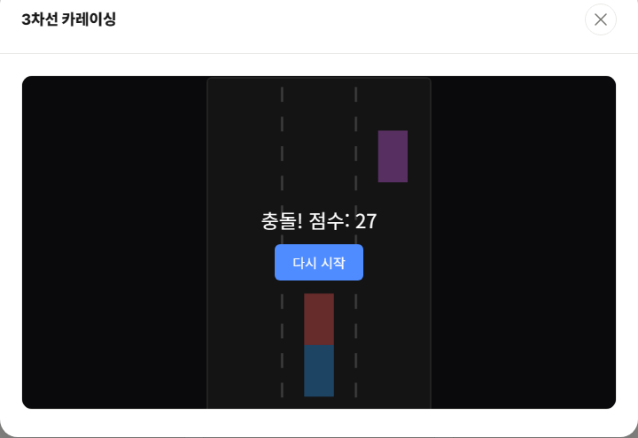

3차선 카레이싱은 세 개의 차선을 오가며 위에서 내려오는 다른 차들을 피하는 레이싱 게임입니다. 규칙은 단순하지만, 시간이 지날수록 속도가 계속 빨라지기 때문에 오래 버틸수록 실력이 드러납니다.

기본 규칙
- ← / → 방향키(또는 A / D 키)로 차선을 왼쪽·오른쪽으로 이동합니다.
- 모바일에서는 화면을 좌우로 스와이프해서 차선을 바꿉니다.
- 다른 차와 부딪히면 즉시 게임이 종료됩니다.
- 시간이 지날수록 속도가 점점 빨라지고, 생존 시간에 비례해 점수가 오릅니다.
오래 살아남는 팁
1. 가운데 차선을 기본 위치로 삼으세요
가운데 차선에 있으면 왼쪽이든 오른쪽이든 한 번의 이동으로 피할 수 있습니다. 급하게 피하고 나면 다시 가운데로 돌아오는 습관을 들이면 대응 시간을 벌 수 있습니다.
2. 화면 아래보다 위쪽을 보세요
속도가 빨라질수록 반응할 시간이 줄어듭니다. 차가 가까워진 다음 반응하면 이미 늦는 경우가 많으므로, 화면 위쪽에서 차가 나타나는 차선을 미리 확인하고 이동 방향을 정해두는 것이 좋습니다.
3. 연속으로 두 번 이동해야 할 때는 서두르지 마세요
한 번에 두 차선을 건너야 하는 상황이 자주 발생합니다. 이때 방향키를 두 번 빠르게 누르기보다, 첫 번째 차선에서 다음 차의 위치를 한 번 더 확인한 뒤 이동하는 편이 안전합니다.
속도가 얼마나 빨라지는지 직접 체감해보고 싶다면 게임 목록에서 3차선 카레이싱을 플레이해 보세요.